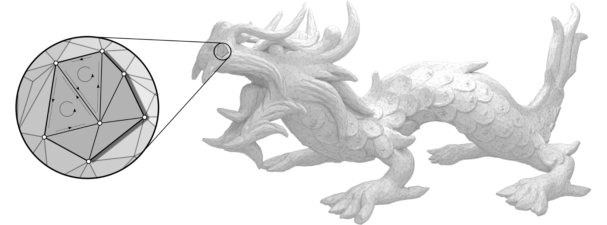
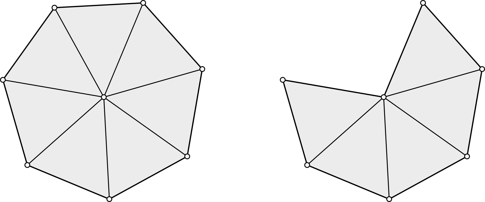
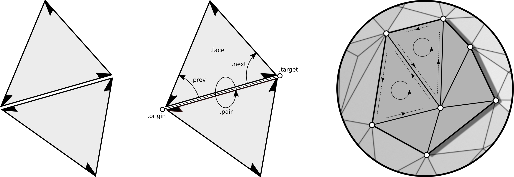

Mesh basics#

We define a polygonal mesh by specifying two sequences: a sequence \(V = (\mathbf{v}_i)_{i=0}^{n-1}\) of geometric vertices such that \(\mathbf{v}_i \in \mathbb{R}^3\) and a sequence \(F = (f_j)_{j=0}^{m-1}\) of combinatorial face definitions.
Faces \(f \in F\) are sequences themselves. A \(k\)-tuple \(f = (i_0, \dots, i_{k-1})\) of integers defines a face of valence \(k\) with vertices \(\mathbf{v}_{i_0}, \dots, \mathbf{v}_{i_{k-1}}\). Faces are not required to be planar or convex. If \(k\) is equal to three for all faces, the pair \((V, F)\) defines a triangle mesh.
Note
We can identify the ordered sequence of vertices with a matrix \(V \in \mathbb{R}^{n \times 3}\). Replacing \(V\) with \(V' \in \mathbb{R}^{n \times 3}\) yields a mesh with identical combinatorics but different vertex positions.
Manifold meshes#
A pair \((V,F)\) as just defined can describe arbitrary collections of polygonal faces. For simplicity we only consider triangular faces in the following definitions. A triangle mesh is 2-manifold if the faces incident to a vertex either form a closed or an open triangle fan.
{kind=link}

The orientation of a face is defined by the cyclic ordering of its incident vertices as specified in its combinatorial definition. The orientation of two adjacent faces is compatible, if the two vertices of the common edge appear in opposite order. A manifold mesh is orientable if any two adjacent faces have compatible orientation.
Note
Both, manifoldness and orientability are determind by the mesh combinatorics \(F\) and do not depend on a concrete geometric realization (an embedding defined by specifying \(V\)).
Halfedge representation#
Any orientable 2-manifold mesh can be represented using halfedges [1] [2]. Conceptually one splits each edge of a mesh into two so called halfedges. Each halfedge is oriented according to the orientation of its incident face. In this way adjacent faces give rise to oppositely oriented halfedges:
{kind=link}

The Mesh class provides a generic halfedge data structure
for orientable 2-manifold meshes. The combinatorics of a mesh is defined via
its halfedges and their attributes. Each halfedge is aware of its incident
face, its origin and
target vertex, the neighboring halfedge
pair, as well as its successor
next and predecessor halfedge
prev in a face defining loop of halfedges.
Note
The explicit representation of a face as a list of its vertices can be reconstructed from the set of halfedges. It is sufficient to know one halfedge per face to compute the face defining loop of halfedges (or vertices).